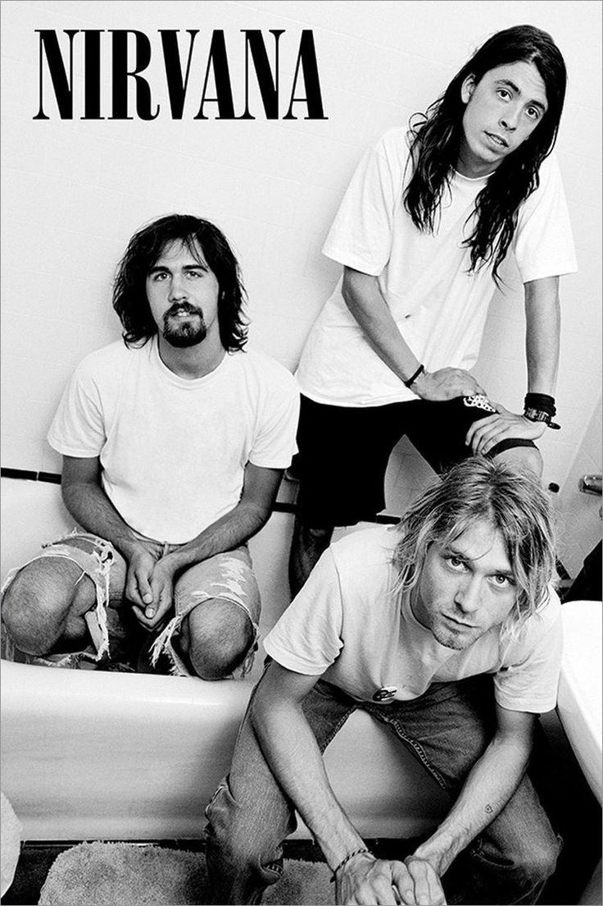
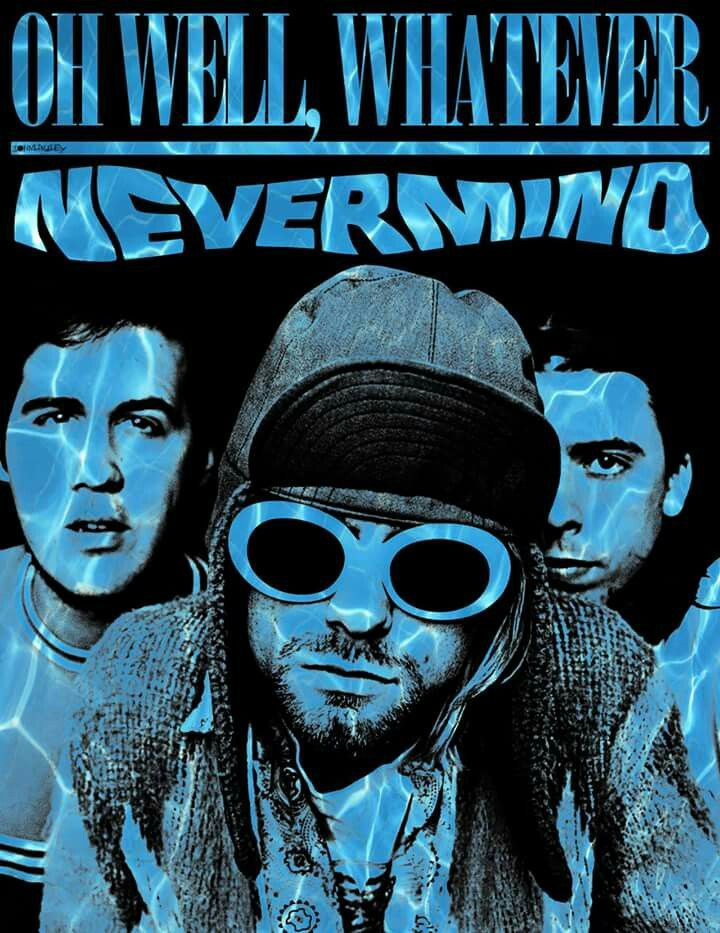
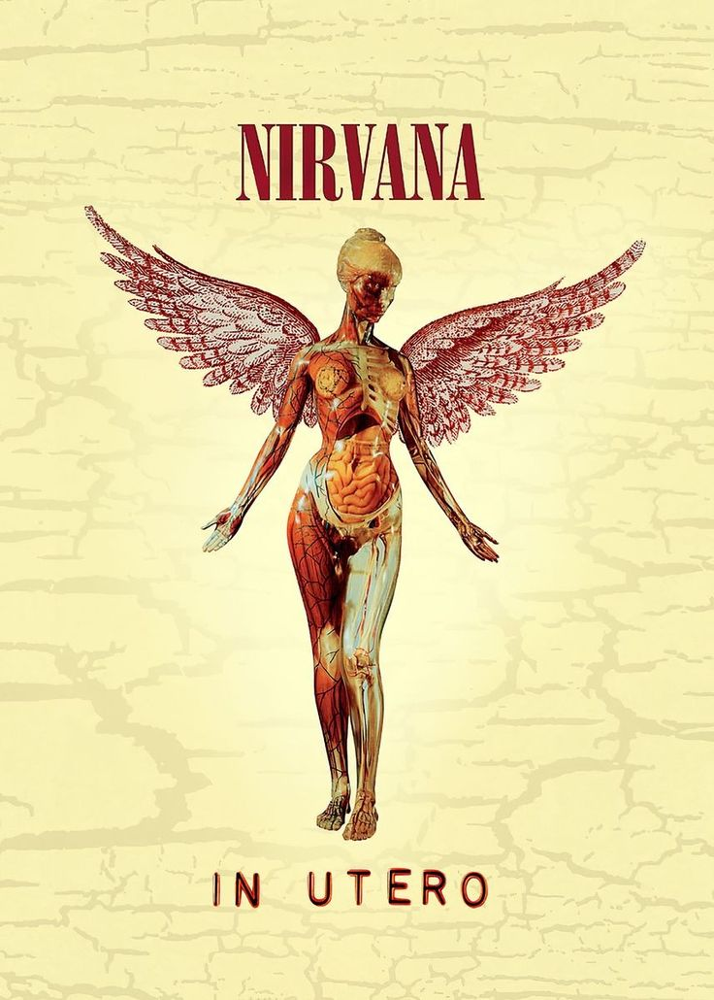
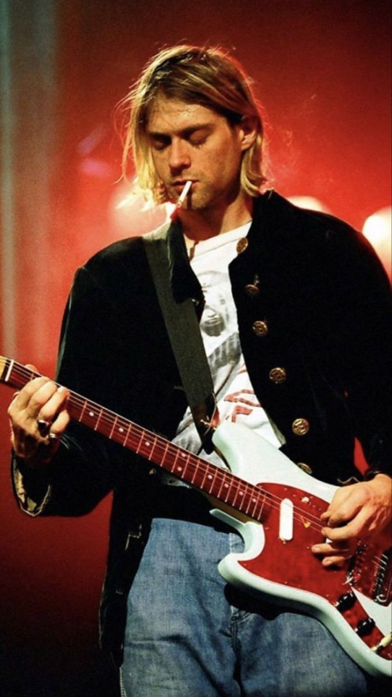

Nirvana, 1987 yılında Washington eyaletinde Kurt Cobain ve Krist Novoselic tarafından kurulan bir Amerikan rock grubudur. İlk başlarda yerel barlarda çalan grup, zamanla kendi müziğini geliştirerek alternatif rock ve grunge türlerinin öncüsü haline geldi. Grup, ilk albümleri Bleach ile bağımsız bir dinleyici kitlesi toplasa da, henüz büyük bir etki yaratmamıştı.
1991 yılında yayımlanan Nevermind albümü, Nirvana’yı tüm dünyaya tanıtan bir dönüm noktası oldu. Özellikle albümdeki “Smells Like Teen Spirit” parçası, grubu bir gecede meşhur etti ve grunge akımını ana akım müziğe taşıdı. Nirvana, “grunge” ile özdeşleşirken, Kurt Cobain de kuşağının sesi olarak anılmaya başlandı. Bu albüm, kısa sürede milyonlarca satarak listelerde bir numaraya yükseldi.
Nirvana’nın başarısı büyük olmasına rağmen, grup içindeki dinamikler karmaşık ve sorunluydu. Cobain, ani şöhretle başa çıkmakta zorlanıyordu. Ayrıca, kişisel problemler ve bağımlılıkla mücadele ediyordu. Bu zorluklar, grup üyeleri arasında gerginliğe ve artan baskıya neden oldu. Bu süreçte In Utero albümü çıktı. Albüm, Nirvana’nın daha karanlık ve ham bir yönünü yansıtsa da yine de büyük ilgi gördü.
Kurt Cobain’in 1994’te trajik ölümüyle Nirvana dağıldı. Ancak grup, müzik dünyasında derin bir iz bıraktı ve sonraki birçok müzisyeni etkiledi. Nirvana’nın kısa sürede yakaladığı başarı ve Cobain’in samimi, ham müzikal yaklaşımı, onu zamansız bir efsane haline getirdi. Bugün, Nirvana hâlâ dinleniyor ve grunge müziğin en önemli temsilcilerinden biri olarak anılıyor.
